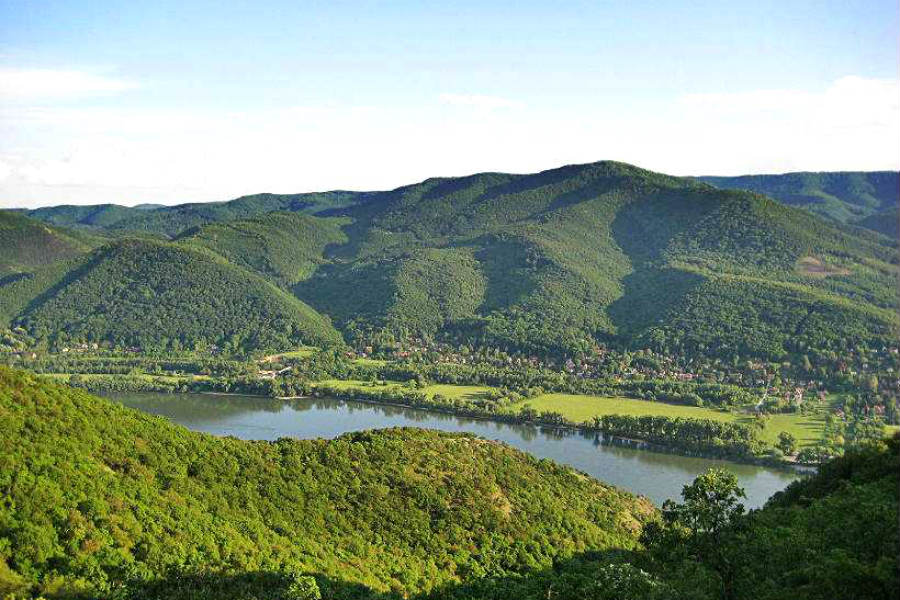
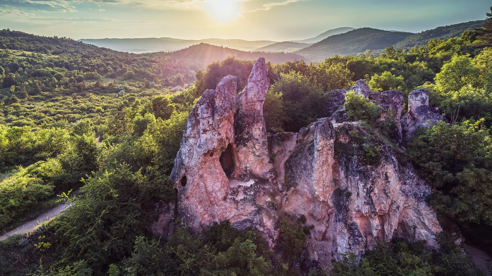
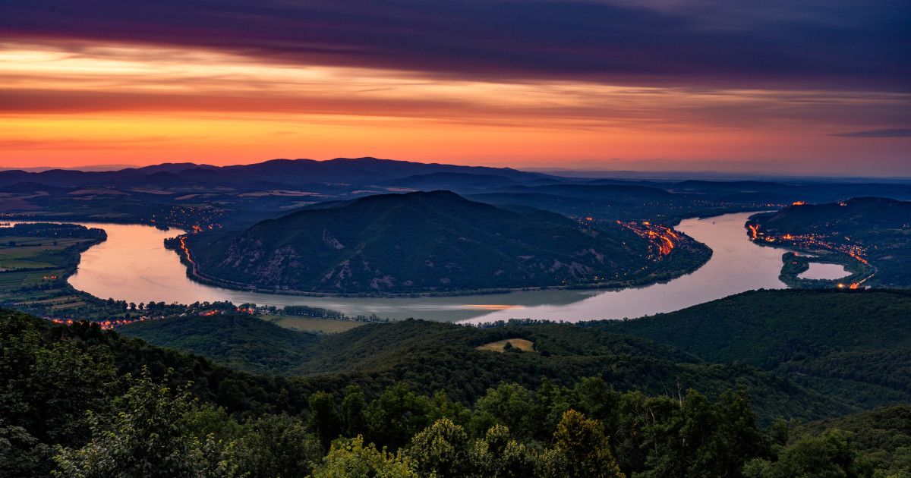
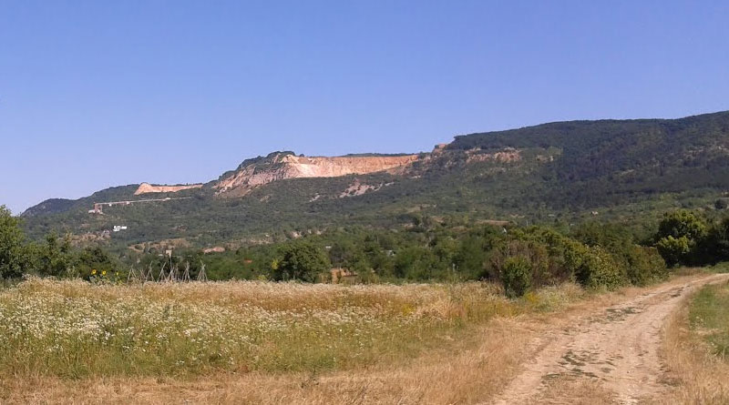

Bemutatkozás
A természetjárás remek sport, amely közelebb hoz minket a természethez. Célunk, hogy minél több túra ötletet és élményt osszunk meg.
Miért jó túrázni?
- Friss levegő
- Mozgás
- Kikapcsolódás
- Természeti élmények
Kiemelt túrák

Börzsöny

Pilis

Dunakanyar
